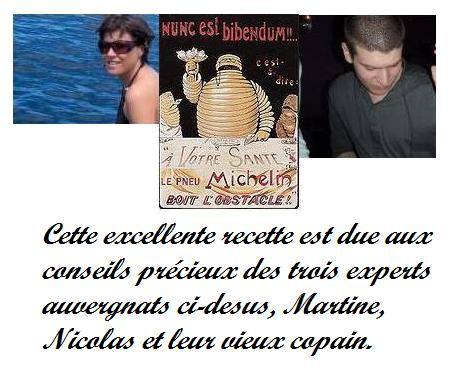

Recette n°226 : pounti auvergnat

Ingrédients : pour 6 personnes
• 1 kg de chair à saucisse
• 100 g de pruneaux
• 150 g de farine
• ½ litre de lait
• 5 œufs
• 2 sachets de levure chimique
• 1 oignon
• 100 g d’échalotes
• 100 g de persil
• 500 g d'épinards surgelés
Préparation :
1 - Décongeler les épinards
2 - Mettre le four à préchauffer
à 210C (410F ; th7)
3 - Préparer la pâte en mélangeant la farine, les
œufs, le lait et enfin la levure
4 - Préparer la farce en passant au mixer
l’oignon, les échalotes, le persil et les épinards, puis
en mélangeant le tout à la chair à saucisses
5 - Mélanger farce et pâte.
6 - Tapisser un moule à cake de papier de cuisson (si on ne fait
pas ça, le résultat sera indémoulable)
7- Mélanger les pruneaux au mélange et remplir le moule
à cake avec le tout
8 - Enfourner et cuire 45 mn environ (un couteau piqué dans la
préparation doit ressortir sec)
9 - Défourner et laisser refroidir un peu (pas trop car c'est
bon tiède) avant de démouler, puis d'enlever le papier
Observations :
Recette préparée à Quiberon en septembre 2009
pour Andrée et Michel Pioger, et nous deux ; excelent avec une
salade verte et un vin rouge corsé.